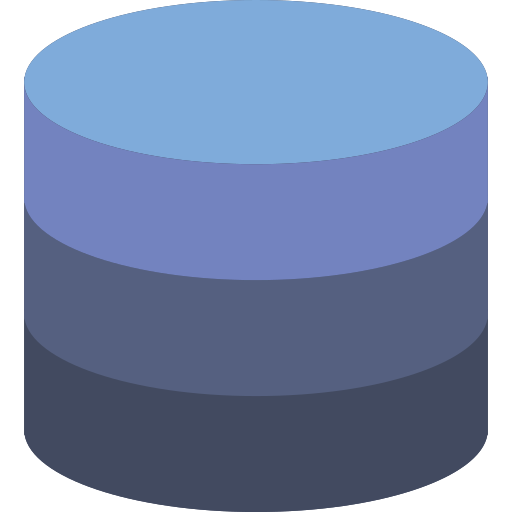

Kotlin
Au cours de ma deuxième année, nous avons appris le langage Kotlin. Dans ce langage, nous avons appris à réaliser une application mobile complète. Nous avons appris à faire un visuel, à créer une logique métier et à communiquer avec une API. Je suis donc grâce à cela capable de réaliser des applications mobiles complètes de A à Z.

Langage C
Au début de ma première année de BUT, nous avons appris pour nous initier à l'algorithmique. Nous avons appris à manipuler de manière statique ou dynamique des listes, à appeler des fonctions de manière récursive ainsi qu'à gérer des fichiers. Grâce à cette compétence, je suis capable de gérer des données, trier de manière efficace celles-ci et créer des algorithmes simples.

Développement web
Pendant ma première année, nous avons découvert le C# à travers un jeu à réaliser en .NET MAUI. En deuxième année, nous avons utilisé de nouveaux frameworks de C#: Entity Framework, qui nous a permis de gérer nos données dans notre application, Blazor, afin de réaliser un panel administrateur ainsi que ASP.NET Core pour développer notre Web API. Ainsi, je suis capable d'utiliser c# ainsi que beaucoup de ses frameworks pour réaliser des algorithmes, des applications MAUI, développer avec Blazor ou encore manipuler des données grâce à Entity Framework.

Base de données
En première année de BUT informatique ainsi qu'en NSI, j'ai appris les bases de données. On nous a montré comment réaliser une base de données, à concevoir des modèles logiques de données et des modèles relationnels de données. Nous avons ensuite appris à les manipuler à travers des requêtes. Nous avons ensuite vu comment administrer une base de données, comment utiliser des vues et comment utiliser le langage PL/pgSQL. Nous avons aussi appris à les manipuler dans nos algorithmes avec Python pour mieux comprendre et analyser ces données, et en réalisant des graphiques par exemple. Je suis grâce à cela capable de réaliser des bases de données conformes aux besoins, manipuler des bases de donner pour extraire les informations souhaitées et analyser ces données pour en tirer des conclusions.
Développement web avec PHP
Pendant ma première année, nous avons appris à structurer des pages avec le langage HTML, à leur donner un style avec le CSS et à récolter des données grâce au PHP. Pendant ma deuxième année, nous avons réalisé en PHP un site web complet permettant la gestion d'un club d'anglais.
Intégration à l'équipe
Je suis capable de m'intégrer efficacement à une équipe. Cette qualité me permet de mieux participer aux travaux de groupe. Elle est très importante dans le domaine de l'informatique, où les projets se réalisent souvent en équipe et où les membres peuvent changer régulièrement. Quelle que soit l'équipe, je serai capable de faire de mon mieux pour contribuer à la réussite du projet et venir en aide à mes camarades.
Patience
Je suis quelqu'un de patient. Cette qualité me permet de travailler plus facilement en équipe, car je sais garder mon calme et éviter les conflits. De plus, je suis capable d'expliquer mon travail autant de fois que nécessaire et de différentes manières afin qu'il soit compris. Cette qualité est également importante en informatique, car il faut de la patience pour relire son programme autant de fois que nécessaire lorsqu'il ne fonctionne pas.
Esprit d'analyse
Je possède un bon esprit d'analyse. Grâce à cette qualité, je suis capable d'analyser efficacement du code et de concevoir des programmes répondant aux objectifs fixés, tout en restant bien structurés.